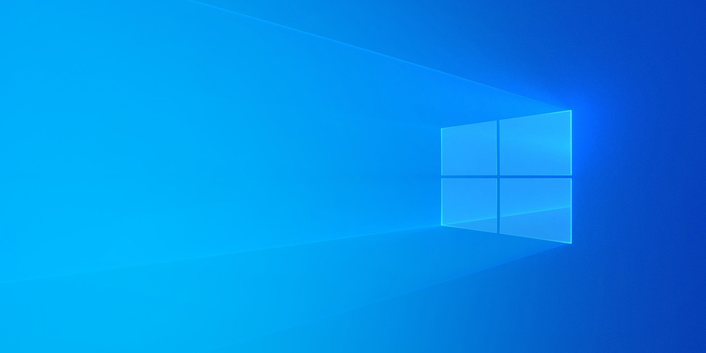

windows
Links:

windows 3.1
Microsoft Windows 3.1 was an evolution to Windows 3.0 and undoubtably the most popular, poster child version in the Windows 3.x series. Among the changes in Windows 3.1 include a drop of real mode support (see more below), the removal of the Reversi game, updated icons with richer colors, an improved setup process with better hardware detection, and the introduction of batch install. The File Manager was completely revamped and a revamped hypertext help system was introduced.
Applications could talk to each other not only through the DDE (Dynamic Data Exchange) protocol, also used by OS/2, but also by the new Windows-only OLE protocol which allows for applications to share any type of object more seamlessly. Write, Paintbrush and the new Object Packager have support for this technology which remains with us today in Windows 8.
Windows 3.1 also came with support for TrueType fonts which provide more realistic font rendering as they are outline fonts that can scale to any point size. With TrueType users could finally have a good grasp that what was shown on the screen would be what was printed without blocky outlines. TrueType survives today along with its close cousin OpenType.
Multimedia support was now fully integrated along with the expandable Control Panel into Windows 3.1. In Windows 3.0 this was provided by a Multimedia PC add-on which usually came with new Multimedia PCs, sound cards and CD-ROM drives of the day. Common supported cards include Adlib and Sound Blaster 16.
BETA During development Windows 3.1 was under the development codename Janus and 3 prerelease versions have surfaced, two beta candidates and a release candidate. The final beta was compiled on December 17, 1991 and expects a BIOS date of the 18th or later. Purple was replaced with blue and the boot screen was overhauled to the modern 3.1 variant.
windows 95
he new Windows operating system with the internal version 4.0 is the successor of Windows 3.11 and brings a completely new design of the interface and of the kernel with it. 32-bit applications are supported fully, DOS applications can also virtually be used now in a DOS box, furthermore 16-bits of programs are supported. Windows 95 to ME still needs DOS for the loading up program and for the DOS box. New hardware is comfortably recognized by plug and play, the memory management was developed further considerably.
Important part of Windows 95 is the Registry now, which is responsible for the system behaviour like file association, program parameter, driver software, system configuration and others. The Registry consists of the files system.dat and user.dat, these are located in the Windows directory. The files system.ini and win.ini are less important but are necessary for the system start furthermore. For user profiles one user.dat is placed in each user directory and loaded upon login of the user for the individual user settings.
DOS driver software are no longer necessary in compare to Windows 3.x by now, the driver software model was changed and the hardware is used through virtual device drivers (*.VxD) directly under Windows.
windows 2000
Windows 2000 is a continuation of the Microsoft Windows NT line of operating systems, replacing its predecessor, Windows NT 4.0. Originally called Windows NT 5, Microsoft changed the name to Windows 2000 on October 27, 1998 It was also the first Windows version that was released without a code name, though Windows 2000 Service Pack 1 was codenamed "Asteroid" and Windows 2000 64-bit was codenamed "Janus" (not to be confused with Windows 3.1, which had the same codename).
The first beta for Windows 2000 was released on September 27, 1997 and several further betas were released until Beta 3 which was released on April 29, 1999. From here, Microsoft issued three release candidates between July and November 1999, and finally released the operating system to partners on December 12, 1999. The public received the full version of Windows 2000 on February 17, 2000 and the press immediately hailed it as the most stable operating system Microsoft had ever released.
InformationWeek summarized the release "our tests show the successor to NT 4.0 is everything we hoped it would be. Of course, it isn't perfect either." Wired News later described the results of the February launch as "lackluster". Novell was not so impressed with Microsoft's new directory service architecture as they found it to be less scalable or reliable than their own Novell Directory Services (NDS) technology.
Originally, Windows 2000 was planned to replace both Windows 98 and Windows NT 4. However, that was later changed. Instead, an updated version of Windows 98 called Windows 98 Second Edition was released in 1999 as a successor to Windows 98. In 1999, Microsoft started development on a project called Windows Neptune, which was supposed to be a home-user edition of Windows 2000. However, the project lagged in production time – and only one alpha release was built.
Windows Me was released as a substitute, and the Neptune project was cancelled in favour of Whistler (Windows XP). The only elements of the Neptune project which were included in Windows 2000 were the ability to upgrade from Windows 95 or Windows 98, and support for the FAT32 file system.
windows xp
Windows XP is a major release of the Windows NT operating system developed by Microsoft. It was the direct successor to both Windows 2000 for professional users and Windows Me for home users, and it was released to manufacturing on August 24, 2001, with retail sales beginning on October 25, 2001.
It was Microsoft's operating system for use on personal computers such as home and business desktops, laptops, tablet PCs and media center PCs until replaced by Windows Vista in February 2007.
Development of Windows XP began in the late 1990s as "Neptune", an operating system (OS) built on the Windows NT kernel which was intended specifically for mainstream consumer use. An updated version of Windows 2000 was also originally planned for the business market; however, in January 2000, both projects were scrapped in favor of a single OS codenamed "Whistler", which would serve as a single OS platform for both consumer and business markets. As such, Windows XP was the first consumer edition of Windows not to be based on the Windows 95 kernel and MS-DOS.
windows vista
Windows Vista is a major release of the Windows NT operating system developed by Microsoft. Development was completed on November 8, 2006,[2] and over the following three months, it was released in stages to computer hardware and software manufacturers, business customers and retail channels.
On January 30, 2007, it was released internationally[3] and was made available for purchase and download from the Windows Marketplace; it is the first release of Windows to be made available through a digital distribution platform.[7] The release of Windows Vista came more than five years after the introduction of its predecessor, Windows XP, the longest time span between successive releases of Microsoft Windows desktop operating systems.
New features of Windows Vista include an updated graphical user interface and visual style dubbed Aero, a new search component called Windows Search, redesigned networking, audio, print and display sub-systems, and new multimedia tools such as Windows DVD Maker. Vista aimed to increase the level of communication between machines on a home network, using peer-to-peer technology to simplify sharing files and media between computers and devices. Windows Vista included version 3.0 of the .NET Framework, allowing software developers to write applications without traditional Windows APIs.
windows 7
Windows 7 is a major release of the Windows NT operating system developed by Microsoft. It was released to manufacturing on July 22, 2009, and became generally available on October 22, 2009.[9] It is the successor to Windows Vista, released nearly three years earlier. It remained an operating system for use on personal computers, including home and business desktops, laptops, tablet PCs and media center PCs, and itself was replaced in November 2012 by Windows 8, the name spanning more than three years of the product. Until April 9, 2013, Windows 7 RTM provided content such as security updates, software updates, PC driver updates and technical support, after which installation of Service Pack 1 is required for users to receive support and updates. Windows 7's server counterpart, Windows Server 2008 R2, was released at the same time. The last supported version of Windows based on this operating system was released on July 1, 2011, entitled Windows Embedded POSReady 7. On January 12, 2016, Microsoft ended support for Internet Explorer versions older than Internet Explorer 11 on Windows 7.[10][11][12] Extended support ended on January 14, 2020, over ten years after the release of Windows 7, after which the operating system ceased receiving further support or security updates to most users, and all PCs that blocks Windows Update on Windows 7 versions newer than KB4499164 released in May 2019 displays a full-screen upgrade warning notification with an information page link starting from January 15, 2020. A support program is currently available for enterprises, providing security updates for Windows 7 for up to four years since the official end of life.[13] However, Windows Embedded POSReady 7, the last Windows 7 variant, continues to receive security updates until October 2021.
Windows 7 was intended to be an incremental upgrade to Microsoft Windows, addressing Windows Vista's poor critical reception while maintaining hardware and software compatibility. Windows 7 continued improvements on Windows Aero (the user interface introduced in Windows Vista) with the addition of a redesigned taskbar that allows applications to be "pinned" to it, and new window management features. Other new features were added to the operating system, including libraries, the new file-sharing system HomeGroup, and support for multitouch input. A new "Action Center" interface was also added to provide an overview of system security and maintenance information, and tweaks were made to the User Account Control system to make it less intrusive. Windows 7 also shipped with updated versions of several stock applications, including Internet Explorer 8, Windows Media Player, and Windows Media Center.
windows 8
Windows 8 is a major release of the Windows NT operating system developed by Microsoft. The product was released to manufacturing on August 1, 2012, and generally to retail on October 26, 2012.[6] Windows 8 was made available for download via MSDN and TechNet and available as a free upgrade for retail copies of Windows 7 users via Windows Update.
Windows 8 introduced major changes to the operating system's platform and user interface to improve its user experience on tablets, where Windows was now competing with mobile operating systems, including Android and iOS.[7] In particular, these changes included a touch-optimized Windows shell based on Microsoft's "Metro" design language and the Start screen (which displays programs and dynamically updated content on a grid of tiles), a new platform for developing "apps" with an emphasis on touchscreen input, integration with online services (including the ability to synchronize apps and settings between devices), and Windows Store, an online distribution for downloading and purchasing new software. Many of these features were adoptions from Windows Phone. Windows 8 added support for USB 3.0, Advanced Format hard drives, near field communications, and cloud computing. Additional security features were introduced, such as built-in antivirus software, integration with Microsoft SmartScreen phishing filtering service and support for UEFI Secure Boot on supported devices with UEFI firmware, to prevent malware from infecting the boot process.
Windows 8 was released to a mixed critical reception. Although reaction towards its performance improvements, security enhancements, and improved support for touchscreen devices was positive, the new user interface of the operating system was widely criticized for being potentially confusing and difficult to learn, especially when used with a keyboard and mouse instead of a touchscreen. Despite these shortcomings, 60 million Windows 8 licenses were sold through January 2013, a number that included both upgrades and sales to OEMs for new PCs.
windows 10
Windows 10 is a major release of the Windows NT operating system developed by Microsoft. It is the successor to Windows 8.1, released nearly two years earlier, and was released to manufacturing on July 15, 2015, and broadly released for the general public on July 29, 2015.[18] Windows 10 was made available for download via MSDN and Technet, as a free upgrade for retail copies of Windows 8 and Windows 8.1 users via the Windows Store, and to Windows 7 users via Windows Update. Windows 10 receives new builds on an ongoing basis, which are available at no additional cost to users, in addition to additional test builds of Windows 10, which are available to Windows Insiders. Devices in enterprise environments can receive these updates at a slower pace, or use long-term support milestones that only receive critical updates, such as security patches, over their ten-year lifespan of extended support.
Windows 10 received mostly positive reviews upon its original release. Critics praised Microsoft's decision to provide a desktop-oriented interface in line with previous versions of Windows, contrasting the tablet-oriented approach of Windows 8, although Windows 10's touch-oriented user interface mode was criticized for containing regressions upon the touch-oriented interface of its predecessor. Critics also praised the improvements to Windows 10's bundled software over Windows 8.1, Xbox Live integration, as well as the functionality and capabilities of the Cortana personal assistant and the replacement of Internet Explorer with Microsoft Edge. However, media outlets have been critical of the changes to operating system behaviors, including mandatory update installation, privacy concerns over data collection performed by the OS for Microsoft and its partners, and adware-esque tactics used to promote the operating system on its release.